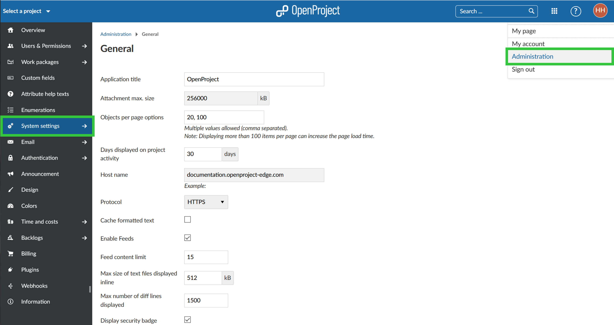

There are various project overarching settings that are referred to as system settings. To adapt these system settings, navigate to your user name and select -> Administration -> System settings.

| Popular Topics | Description |
|---|---|
| General settings | How to configure general system settings, e.g. a welcome text block on the application landing page, attachment size, and much more? |
| Display settings | How to configure languages, date and time formats, week start, and more? |
| System projects settings | How to set default project modules and more? |
| Repositories | How to integrate SVN or GIT repositories? |